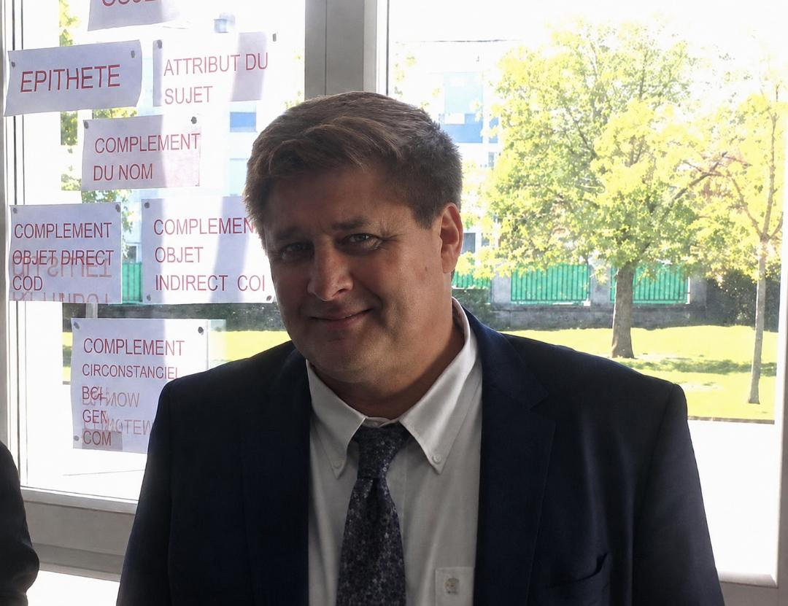

Olivier Caley
« Pas un jour sans une ligne. »
Auteur girondin
Mes romans
Saint-Geyrac
Un roman consacré à la mémoire familiale, aux racines et aux secrets enfouis dans les lieux de l'enfance.
Le village devient le gardien silencieux d'une histoire intime où les générations, les souvenirs et les non-dits se répondent.
Découvrir Saint-Geyrac1984 YNWA
Bordeaux, 1984. Une jeunesse traversée par le rock, les désirs, l'Angleterre et Liverpool.
Un roman nerveux et musical où les souvenirs personnels croisent une époque, une ville et un refrain : You'll Never Walk Alone.
Découvrir 1984 YNWAL'auteur

Olivier Caley est un auteur girondin dont l'écriture puise dans la mémoire, les lieux, les liens familiaux et les émotions qui façonnent une vie.
Profondément attaché au patrimoine, à l'histoire des territoires et à la mémoire des lieux, il accorde également une place importante à la psychologie complexe de ses personnages.
Avec Saint-Geyrac et 1984 YNWA, il développe deux univers différents mais reliés par une même attention aux lieux, à la mémoire et aux destinées humaines.